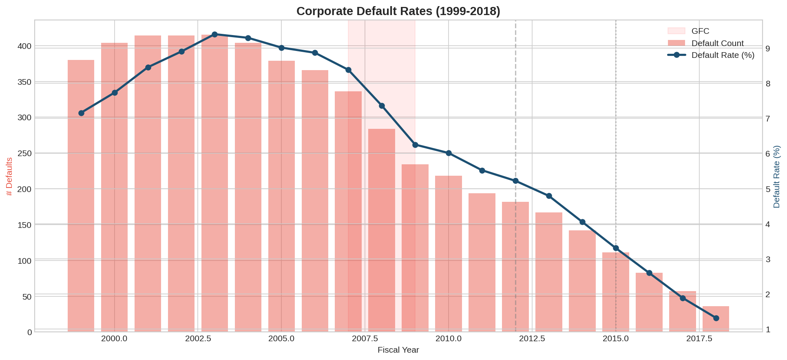
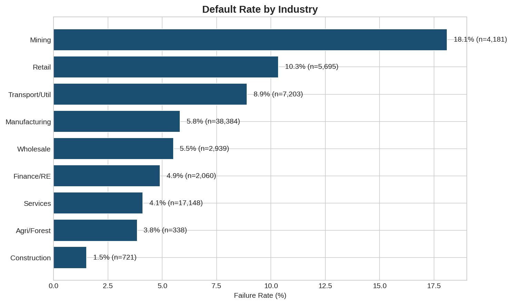
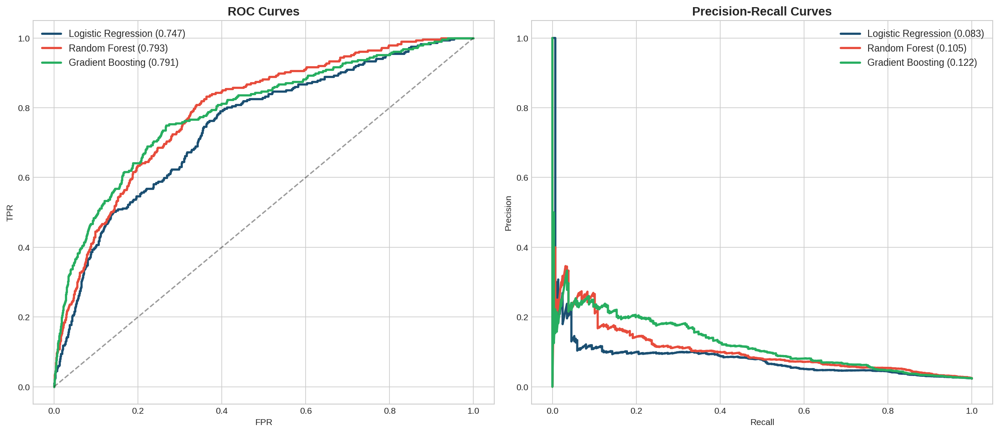
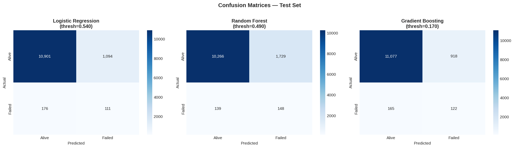
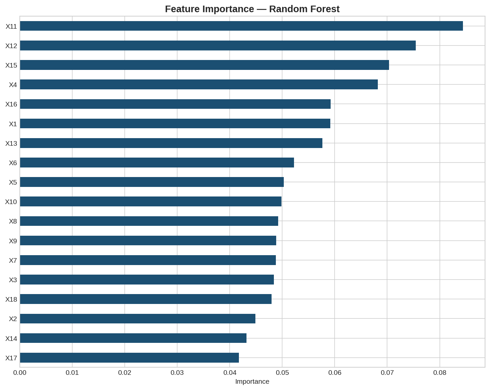
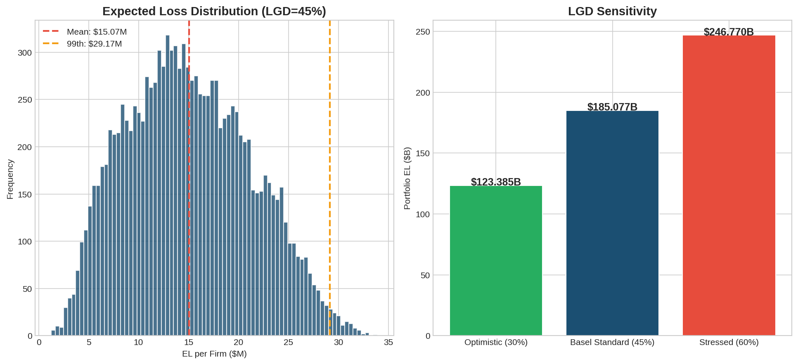
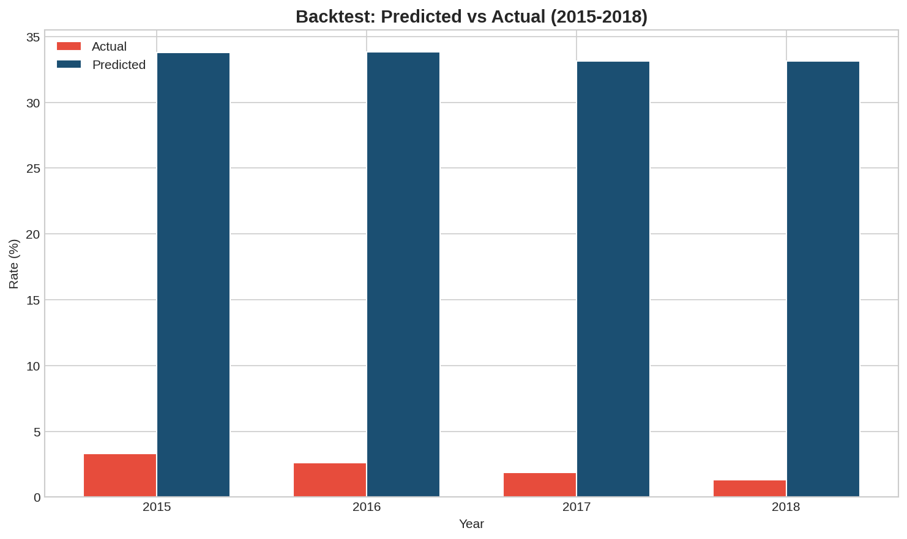
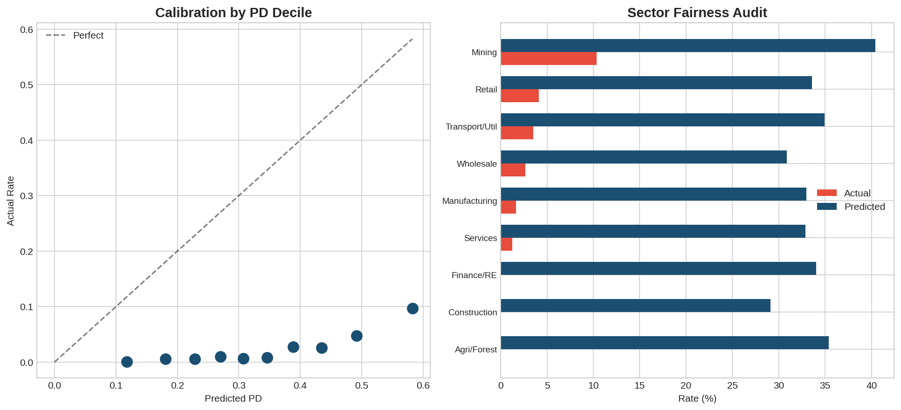

Predicting bankruptcy across 8,971 U.S. public companies using ensemble ML, then translating predictions into expected portfolio losses with Basel II/III frameworks.
Corporate bankruptcy is a rare but high-impact event. Accurately predicting which firms will default is critical for credit analysts, portfolio managers, and regulators — it drives capital allocation, lending decisions, and systemic risk assessment.
Traditional statistical models like Altman's Z-Score provide a linear foundation, but machine learning methods can capture complex, non-linear relationships among financial indicators that conventional approaches miss.
This project bridges two worlds: ML classification and financial risk quantification. It goes beyond asking "will this firm default?" to answer "how much could we lose?" — using the industry-standard Expected Loss framework (PD × LGD × EAD) from Basel II/III.
Publicly available benchmark dataset from Lombardo et al. (2022), covering NYSE and NASDAQ listed companies. Bankruptcy is defined per SEC criteria: Chapter 11 reorganization or Chapter 7 liquidation.
| Attribute | Detail |
|---|---|
| Source | sowide/bankruptcy_dataset (GitHub) · MDPI Future Internet 2022 |
| Companies | 8,971 public firms (NYSE & NASDAQ) |
| Time Period | 1999 – 2018 (20 years) |
| Observations | 78,682 firm-year records |
| Features | 18 accounting variables (X1–X18) + SIC Division & Major Group |
| Target | Failed (1) vs. Alive (0) — based on Chapter 7/11 filing |
| Class Balance | 6.63% overall failure rate (5,220 failures); 2.34% in test set |
| Splits | Train: 1999–2011 (55,927) · Val: 2012–2014 (10,473) · Test: 2015–2018 (12,282) |

Figure 1 — Default rates peaked during 2001–2003 and declined steadily post-GFC, reaching 1.3% by 2018.

Figure 2 — Mining (18.1%) and Retail (10.3%) show the highest failure rates by SIC division.
Class distribution analysis, temporal trend visualization, correlation heatmaps, feature selection via ANOVA F-test.
Logistic Regression, Gradient Boosting, Random Forest with class-balanced weights. Threshold tuning on validation set.
Expected Loss = PD × LGD × EAD. Sensitivity analysis across LGD scenarios. GFC backtest.
Feature importance ranking, calibration-by-decile analysis, sector fairness audit. Ethical AI reflection.
With only 2.34% failures in the test set, standard accuracy is meaningless — a naive model predicting "alive" for everything scores 97.7%. The pipeline uses class-balanced sample weighting, scale_pos_weight tuning, and optimized decision thresholds evaluated on Precision-Recall AUC — not just ROC. Thresholds were tuned on the 2012–2014 validation set to avoid data leakage.
Three models compared on the held-out test set (2015–2018), respecting temporal ordering to prevent data leakage.
| Model | AUC-ROC | AUC-PR | F1-Score | Threshold |
|---|---|---|---|---|
| Logistic Regression | 0.7469 | 0.0829 | 0.1488 | 0.540 |
| Random Forest BEST AUC | 0.7925 | 0.1045 | 0.1368 | 0.490 |
| Gradient Boosting BEST F1 | 0.7906 | 0.1221 | 0.1839 | 0.170 |
Random Forest achieves the highest AUC-ROC (0.793), while Gradient Boosting leads on precision-recall (AUC-PR: 0.122) and F1 (0.184). The low absolute AUC-PR values reflect the extreme 2.34% failure rate in the test period — a significantly harder classification problem than the 7.9% training rate.

Figure 3 — ROC and Precision-Recall curves across all three models. Random Forest and Gradient Boosting perform comparably.

Figure 4 — Confusion matrices showing the precision-recall tradeoff at each model's optimal threshold.

Figure 5 — Feature importance from Random Forest. X11, X12, and X15 are the strongest predictors of corporate default.
Translating PD predictions into financial risk metrics using the industry-standard Basel Expected Loss framework.
Portfolio of 12,282 firms in the test set (2015–2018), each with assumed $100M exposure at default.

Figure 6 — Expected loss distribution per firm (left) and portfolio-level sensitivity to LGD assumptions (right).

Figure 7 — Backtest comparing model-predicted average PD against realized default rates in the test period (2015–2018).
ML models for credit risk carry real-world consequences. These predictions influence capital allocation and ultimately determine which companies receive financial support. A stewardship perspective demands we build these systems with care.

Figure 8 — Model calibration by PD decile (left) and sector-level fairness audit comparing actual vs. predicted default rates (right).
Feature importance analysis reveals X11, X12, and X15 as the top default predictors — every prediction can be traced back to specific financial drivers, not a black box.
Mining (18.1%) and Retail (10.3%) show drastically higher failure rates than Services (4.1%) or Construction (1.5%). The calibration audit checks whether the model's predictions align with actual rates across sectors.
ML should inform — not replace — human judgment. The EL framework anchors analysis quantitatively, but experienced analysts contextualize it.
Predictive power carries responsibility. Models should enable early intervention and support, not just risk avoidance that leaves vulnerable entities without recourse.
The complete notebook, dataset instructions, and all visualizations are available on GitHub.